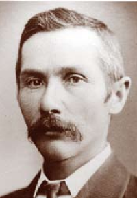

Drabsch Street
Adolph Wilhelm Robert (AWR) Drabsch, ‘The Father of Loxton’
AWR Drabsch, born 3rd September 1865 at Woodside, married Ernestine Quast in 1890 at Mannum where he farmed and managed the Allgemeiner Deutscher Verein, (later the Mannum Club). He became one of the first farmer-settlers in Loxton, first through leasing in 1895 then, (with brothers Reinhold, Paul and John) purchasing land in 1897. His brother John and his wife Ida were Loxton’s long- serving postmasters.
AWR was a natural leader with considerable business acumen. A spokesman for the growing town, his character and sense of public duty laid foundation for Loxton’s strong community spirit today. His guidance led to proclamation of the town on forty allotments from Drabsch farmland in 1907. In 1910, he became first chairman of Loxton District Council. He chaired the Hospital Board, the Institute Committee, the War Recruiting Committee, the Vermin Board and, from 1923, St Peters Lutheran Church Building Committee. Instrumental in bringing the railway, reticulated water and telephone services to Loxton, he built the first picture theatre and contributed to Loxton’s first dryland experimental farm,130 again on Drabsch land.
Although he served the town with distinction until 1916, during WW1, his German heritage was misrepresented. He was heart-broken to be incarcerated in Holdsworthy Internment Camp for nearly three years.
In 1920, with no charge ever laid nor authority for his arrest determined, a Royal Commission in finding nothing against him, praised his "undeniable service to Australia!"
He soon returned to public life, but sadly these experiences had taken their toll. He died on 6th May 1924 aged fifty eight, four days after his wife. Drabsch Street has prominence in Loxton, a fitting memorial to ‘the Father of Loxton’ and his brothers.
Prepared by Rose Mawby, Peter Magarey and Bill Drabsch (nephew) [WW1 – World War 1]